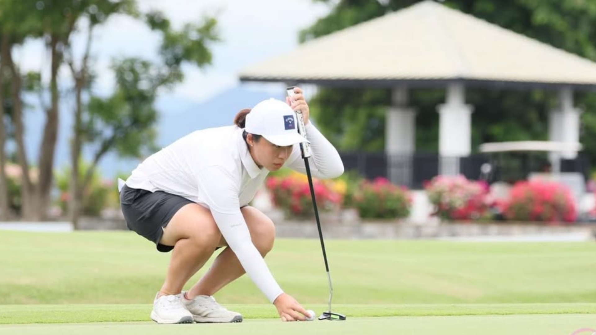
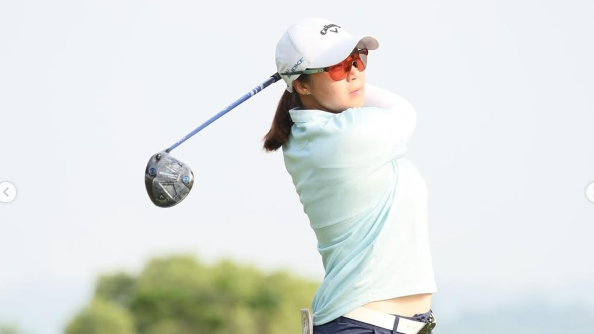
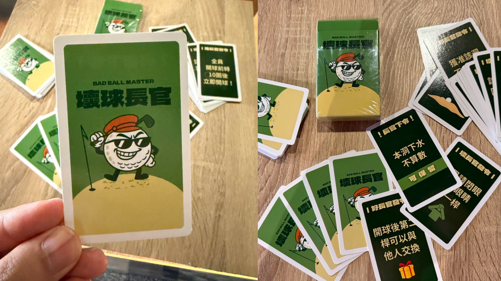
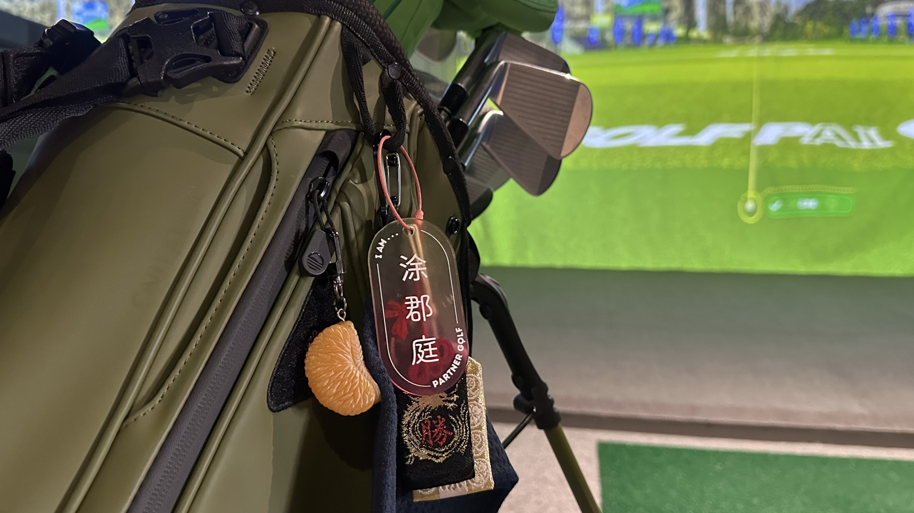

五月的午後，豔陽毫不留情地灑在台中南屯街頭。走進一間室內高爾夫球場，球桿猛力揮擊的破風聲以及清脆的擊球聲此起彼落，我們與郡庭就約在這個她平日教學的場地碰面。第一眼看到郡庭時，給人一種內斂、有些害羞，卻又親切有禮的第一印象。
涂郡庭目前是一位身兼雙職的職業高爾夫選手，她不僅在職業賽場上奮戰，同時也在台中深耕基層，擔任高爾夫教練。這位當年因為太愛玩電腦而被父親帶到練習場的小女孩，到如今在果嶺上獨當一面的職業球員，她的高球之路充滿了現實的考驗與對運動純粹的熱愛。
回憶起接觸高爾夫的契機，涂郡庭笑說，小學一、二年級時因為太愛玩電腦，爸爸索性把她和哥哥帶去高爾夫球練習場。當時剛好有一群同年齡的孩子一起練球，在教練「打得很遠，不打太可惜」的鼓勵下，她逐漸培養出興趣並開始正式上課。
隨著成績進步，她被選入國家培訓隊，曾長期待在揚昇高爾夫球場集訓，並代表國家出國比賽。在整個業餘階段，爸爸是她最堅實的後盾，不僅負擔擊球費、機票與住宿等龐大開銷，更不辭辛勞地載著她四處征戰比賽，回憶起這段往事時，她也流露出對於家人們的感謝之情。

受限於職業選手無法代表大學比賽以及參加業餘賽事，郡庭直到畢業後才正式轉為職業選手。而相較其他職業高爾夫球選手，她的起步也較他人晚了不少。在真正踏入職業殿堂後，她也不諱言地指出最為直接的衝擊便是隨之而來的巨大經濟壓力。職業賽場中一場為期一週的比賽，開銷往往是一兩萬元起跳，若在淘汰線（註：通常是取前 50 或 60 名）外黯然出局，便沒有任何獎金收入。而上述的情況是在國內比賽，倘若是在沒有獲得贊助的前提下出國比賽，無疑是更加沉重的負擔。
為了爭取企業支持，她必須在賽前的配對賽中積極與贊助商們交流，「不同企業主有不同的喜好，甚至外型也會成為贊助的考量之一。」郡庭表示。
每一場比賽的第一洞開球，都是很緊張的事情。— 涂郡庭
在賽場上，巨大的心理壓力也是職業選手必須面對的課題。就算身經百戰，涂郡庭也坦言：「每一場比賽的第一洞開球，都是很緊張的事情。」面對唱名與觀眾的目光，她只能不斷提醒自己「只要把球順順的開出去就好。」她認為高爾夫是一項極度個人的運動，不僅要在打球時活在自己的世界裡不受干擾，更是一場「不斷與自己比較」的長期抗戰。不過她也提到，即便在打球多年後，還是多少會在意他人的眼光，因此也是她努力克服的目標之一。

2020 年轉職業後，為了維持生計並減輕家裡的負擔，涂郡庭決定從台北到教練資源相對缺乏的台中發展教學事業。她觀察到，台中有許多小朋友與青少年想學習高爾夫，但專門培訓的教練卻相對匱乏；同時，市場上對於女性教練的需求也很高。
不過，教球與練球之間存在著微妙的衝突。由於高爾夫極度講究姿勢的穩定與揮桿機制，在教學過程中，教練往往會因為幫學生校正姿勢，導致自己的揮桿動作多少受到干擾。因此，郡庭每週仍會定期聘請自己的教練進行調整，盡可能維持自身動作的穩定性。
除了實體教學，她也與大學學姐共同創立了品牌，提供教學訓練之外，更透過拍攝影片分享高球知識來拓展知名度。除此之外，她們還親自設計了一套專屬的「壞球長官」高爾夫卡牌，為球局增添不同的遊戲規則與趣味性。這套卡牌一推出便大受好評，沒多久就迅速完售並再版製作。

談到運動員的現實面，涂郡庭直言「天分在這項運動中的占比蠻高的。」她以世界第一的選手為例，雖然她的動作可能看似不標準，然而卻無人能加以模仿，因為每個人的身體結構與柔軟度都不同，後天的努力固然重要，但身體條件的先天優勢難以忽視。
面對職業賽場的殘酷，她去年一度因為頻繁被淘汰，加上不想以快 30 歲的年紀再去跟 18、19 歲的年輕選手爭取資格賽，而萌生了放棄職業選手身分的念頭。儘管母親希望她能接手與高球無關的家業，但每當離開賽場一段時間，那股「享受比賽的感覺」又會把她拉回來。
當然還是會希望可以贏得一個職業賽事的冠軍吧！— 涂郡庭
目前職業賽最佳成績為第八名的她，心中始終懷抱著一個尚未達成的里程碑——「當然還是會希望可以贏得一個職業賽事的冠軍吧！」訪談的最後，郡庭也與我分享了她愛用的球具與各式各樣的球標，幸福的神情溢於言表，衷心祝福她能夠持續堅持熱愛的事物，同時留下一個沒有遺憾的生涯。
